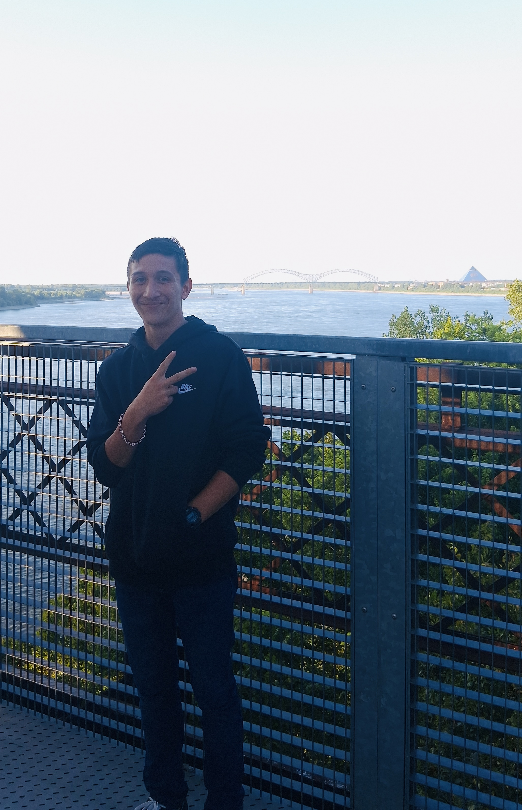

PERSONNEL PROFILE
AIDAN J.
CARDENAS
REF: AJC-2026 // BURLISON, TN
A detail-oriented creative professional with hands-on experience in website creation and maintenance, live media production, and event photography. Strong visual instincts developed through real work environments — from studio coordination to live-broadcast camera operation.
Known for reliability, adaptability, and the ability to support both creative and technical workflows. Currently building skills across web development, UI design, and multimedia production — with a commitment to growing through every project taken on.
WORK HISTORY
EXPERIENCE
CURRENT
MULTIMEDIA — CHURCH MEDIA TEAM
Operate camera equipment and oversee live switching using Blackmagic Design ATEM hardware. Manage multi-platform live broadcasts via Restream.io while controlling on-screen visuals including lyrics, sermon notes, and announcements — requiring precise timing and real-time collaboration with the worship team.
CURRENT
KIMBERLY KESLER STUDIO
Support studio operations through website creation and ongoing maintenance, supply organization, and class setup and teardown. Handle event photography during sessions — capturing individual student work, group photos, and candid moments for documentation and promotional use.
PRIDDY FARMS — SEASONAL
Supported daily farm operations during the autumn season: stocked and organized seasonal products, set up photo areas and product displays, ran concessions, handled cash transactions, operated farm equipment, facilitated hayrides, and performed in the haunted house attraction.
JIREH-FC REMODELING — APPRENTICE
Supported residential remodeling projects across a wide range of skilled trades — drywall, painting, plumbing, electrical, roofing, masonry, tile, flooring, and carpentry. Developed a strong work ethic, attention to detail, and the ability to adapt across fast-paced job sites over nearly a decade of hands-on experience.
CAPABILITIES
SKILLS
BRIGHTON HIGH SCHOOL
ACHIEVEMENTS
01
NATIONAL BETA CLUB
02
HONOR ROLL
03
PERFECT ATTENDANCE
04
AJROTC